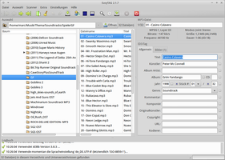
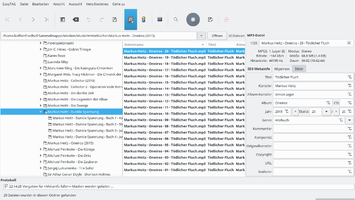
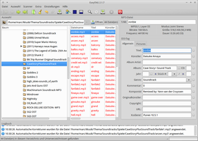
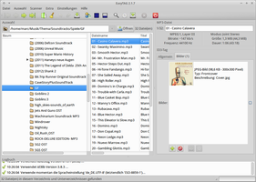
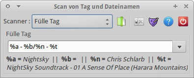

EasyTAG
Dieser Artikel wurde für die folgenden Ubuntu-Versionen getestet:
Ubuntu 16.04 Xenial Xerus
Ubuntu 14.04 Trusty Tahr
Zum Verständnis dieses Artikels sind folgende Seiten hilfreich:
Das Programm EasyTAG  ist ein mächtiges Werkzeug, um die Metadaten von Musikdateien wie Interpret oder Titel anzuzeigen und zu bearbeiten (u.a. bei den Formaten FLAC, MP3 und OGG/Vorbis). Besonders praktisch sind dabei Stapelverarbeitungsfunktionen, um Tags bei mehreren Dateien gleichzeitig zu ändern. Außerdem können Tags und Dateinamen in beiden Richtungen und automatisch abgeglichen werden.
ist ein mächtiges Werkzeug, um die Metadaten von Musikdateien wie Interpret oder Titel anzuzeigen und zu bearbeiten (u.a. bei den Formaten FLAC, MP3 und OGG/Vorbis). Besonders praktisch sind dabei Stapelverarbeitungsfunktionen, um Tags bei mehreren Dateien gleichzeitig zu ändern. Außerdem können Tags und Dateinamen in beiden Richtungen und automatisch abgeglichen werden.
|  |
| EasyTAG |
|  |
| EasyTAG unter Kubuntu 16.04 |
Installation¶
Das Programm kann direkt aus den offiziellen Paketquellen installiert [1] werden:
easytag (universe)
 mit apturl
mit apturl
Paketliste zum Kopieren:
sudo apt-get install easytag
sudo aptitude install easytag
Nach der Installation kann man EasyTAG unter Unity über die Eingabe von easytag bzw. bei Ubuntu-Varianten mit einem Anwendungsmenü über "Multimedia -> EasyTAG" starten.
Programm¶
Das Programm teilt sich optisch in mehrere Bereiche auf. Für die Bearbeitung am wichtigsten sind die Felder: "Auswahl, Datei" und "Tag". Wählt man eine Datei aus, passen sich die Feld-Titel automatisch an die Datei an – "Datei" wird z. B. zu "MP3-Datei" und "Tag" zu "ID3-Tag".
|  |
| Auswahl |
Auswahl¶
In diesem Bereich befindet sich die Navigationsleiste. Mit einigen Klicks gelangt man zu dem Ordner, in dem sich die zu bearbeitenden Musikdateien befinden. Zur Beschleunigung der Ordnerauswahl kann auch ein bestimmter Musikordner voreingestellt werden. Wählt man über den Bereich "Baum" einen Ordner aus, in dem die zu bearbeitenden Musikdateien liegen, durchsucht EasyTAG diesen daraufhin selbständig. Die gefundenen Musikdateien werden – bei veränderten Tags – rot eingefärbt im rechten Bereich des Auswahlfensters ("Dateiname") angezeigt. Die zu bearbeitenden Dateien können jetzt – ganz nach Bedarf – ausgewählt werden, z.B.:
alle Dateien auswählen: Strg + A , die gleiche Wirkung hat auch das Symbol
einzelne Dateien (auch Dateien, die nicht direkt untereinander liegen): Strg + linker Mausklick

nur eine Datei: linker Mausklick
Datei¶
In diesem Feld erhält man wichtige Informationen zu dem ausgewählten Stück. Um das Stück anders zu benennen, muss man den neuen Titel im zugeordneten Feld eingeben und abschließend speichern. Alternativ können auch zuerst die ID3-Tags bearbeitet werden, um am Ende die Dateien automatisch umzubenennen.
|  |
| Taggen |
Tag¶
Allgemein¶
Nachdem man in der Auswahl ein Stück oder einen Ordner ausgewählt hat, können nun Information eingegeben werden z.B. "Titel, Künstler, Album, Komponist, Jahr, Stück-Nummer, Genre, Kommentar" et cetera. Wurden mehrere Dateien ausgewählt, können diese Informationen auch auf diese automatisch übertragen werden (mit einem -Klick auf den kleinen Button rechts des Eingabefeldes!). Dabei ist eine gewisse Vorsicht geboten, da EasyTAG leider nicht davor warnt, wenn man mehreren Dateien gleichzeitig auf den gleichen Titel setzt. Erst wenn man anschließend auch noch versucht, die gleichen Dateien auch noch gleich zu benennen, widerspricht EasyTAG.
Bilder¶
Um in dem Stück ein Titelbild (Cover) zu hinterlegen, besorgt man sich zuerst die passende Bilddatei aus dem Internet - z.B. per Suchmaschine. Anschließend kann dieses Bild per Drag & Drop abgelegt werden. Hierzu das Bild einfach aus dem Dateimanager auf den Bereich ziehen. Das Titelbild kann später z.B. in Amarok oder Banshee, etc. angezeigt werden. Um Problemen vorzubeugen, sollte die Bildabmessungen nicht zu groß gewählt werden. Als Richtwert können 240x240 Pixel dienen.
Hinweis:
Damit alle Änderungen wirksam werden, müssen die bearbeiteten Dateien später noch abgespeichert werden. Sollen alle bearbeiteten Dateien vor dem Speichern nochmals überprüft werden, muss der Haken (Voreinstellung) bei der abschließenden Frage "Aktion für die übrigen Dateien wiederholen" entfernt werden.
Tipps¶
Attribute übernehmen¶
Damit man bei mehreren Musikstücken nicht bei jedem z.B. den Namen des Albums einzutragen braucht, geht man wie folgt vor:
Öffnen des zu ändernden Ordners
Auswahl aller Dateien in diesem Ordner
Eingabe des Albumtitels
bzw. (ab Trusty) rechts neben dem editierten Feld anwählen
Änderungen abspeichern
Diese Option kann auf alle zu bearbeitenden Punkte der Tags übertragen werden. Vorsicht ist nur bei den Stücktiteln geboten!
Ein gesamtes Album automatisch bearbeiten¶
EasyTAG kann auch ganze Alben automatisch mit Tags versehen. Dazu wählt man ein vollständiges Album aus und öffnet über "Extras -> CD-Datenbanksuche" die Suchmaske. Hier kann man nochmals überprüfen, ob alle für das Album relevanten Titel ausgewählt sind.
Startet man die "Suche", so fragt EasyTAG über das Internet die Musikdatenbank freeDB.org ab. Ist das Album kein zu seltenes Exemplar, so sollten verschiedene passende Einträge gefunden werden. Die Treffer kann man sich nun ansehen und über "Anwenden" den passendsten Treffer als Tag für das Album übernehmen. Hierbei werden die Tags für Künstler, Album, Titel, Titelnummer sowie Jahr übernommen.
Kopieren¶
Innerhalb des Programms können Inhalte nicht per Mausklick kopiert und eingefügt werden. Abhilfe schafft hier Strg + C (kopieren), Strg + X (ausschneiden) und Strg + V (einfügen).
|  |
| Umbenennung |
Dateien automatisch umbenennen¶
EasyTAG bietet die Möglichkeit, mehrere Dateien automatisch nach ihren Tags benennen zu lassen. Dazu klickt man auf das "Datei(en) scannen"-Symbol bzw. (ab Trusty) und wählt dann "Datei und Verzeichnis umbenennen" als Option für "Scanner" (alternativ im Menü Scanner->"Dateien und Verzeichnisse umbenennen"). In diesem neu geöffneten kleinen Fenster befindet sich unten ein Eingabefeld für die Maske, nach der die Dateien umbenannt werden sollen. Eine Legende der Maskenoptionen wird durch das Betätigen der "Legende anzeigen/verstecken"-Schaltfläche angezeigt bzw. ausgeblendet. Mit einem Klick auf die "Ausgewählte Dateien scannen"-Schaltfläche bzw. die Schaltfläche "Datei(en) scannen" (ab Trusty) merkt die Namensänderungen an den ausgewählten Dateien vor. Mit im Hauptfenster können die Änderungen dann geschrieben werden.
Die einzelnen Parameter lassen sich auch dazu verwenden, Verzeichnisse und Unterverzeichnisse anhand der Tags der bearbeiteten Audiodateien zu erstellen bzw. umzubenennen.
/home/BENUTZERNAME/Eigene Musik/%a/%b/%n - %t
Der Vorwärtsschrägstrich leitet also die Erstellung eines Verzeichnisses ein, wenn dieses nicht schon existiert. In dem Beispiel würden also im Verzeichnis "Eigene Musik/" des jeweiligen Benutzers Unterverzeichnisse mit dem Namen des Interpreten (%a) und darin dann Unterverzeichnisse mit dem Namen des Albums (%b) angelegt. Die Dateien selbst würden dann darin abgelegt und nach dem Schema "Tracknummer (%n) - Titel (%t)" benannt. Die Dateinamenserweiterung bleibt erhalten. Sofern man schon richtig benannte Dateien zur Verfügung hat, kann man mit dem "Datei(en) Scanner" auch die Metadaten der Musikdateien füllen, dazu wählt man im Scanner die Option "Fülle Tag" und verfährt analog zur Umbenennung.
Sound Juicer¶
Sofern Sound Juicer installiert ist, wird automatisch EasyTAG gestartet, nachdem eine Audio-CD ausgelesen wurde, um die neuen Dateien auch noch richtig mit Tags zu versehen.
Einstellungen¶
Musikordner¶
Hat man auf dem System einen festen Musikordner, kann dieser unter "Einstellungen -> Einstellungen -> Auswahl" als Vorgabeverzeichnis eingetragen werden. Damit dieser Ordner und die dazugehörigen Unterordner beim nächsten Programmstart automatisch geladen werden, muss man ein [x] Häkchen setzen bei Lade beim Start.... Außerdem kann in diesem Reiter angegeben werden, ob Unterverzeichnisse oder versteckte Ordner automatisch durchsucht werden sollen oder nicht.
ID3v2-Tags¶
Die aktuelle Version des informellen Standards ID3 für MP3-Dateien ist ID3v2.4. Leider haben viele mobile Player und auch manche Abspielprogramme Probleme damit. Für eine größtmögliche Kompatibilität mit unterschiedlichen Hardware- und Softwareplayern empfiehlt es sich, unter "ID3-Tag-Einstellungen" bei ID3v2-Tags nicht die Voreinstellung ID3v2.4, sondern das ältere "ID3v2.3" auszuwählen.
Bestätigung¶
Unter "Einstellungen -> Einstellungen -> Bestätigung" können die Bestätigungsmeldungen und -abfragen (de-)aktiviert werden.
Problembehebung¶
Audio-Player einstellen¶
Beim Speichern der Einstellungen von EasyTAG kann es vorkommen, dass man eine Meldung über ein fehlendes Wiedergabeprogramm erhält. In diesem Fall muss man im Einstellungsdialog die Registerkarte "Extra" wählen und dort in das (leere) Feld "Player starten" ein Wiedergabeprogramm zur Verwendung mit EasyTAG angeben. Hier genügt es, den Startbefehl des bevorzugten Audio-Players einzutragen.
Fenster "springt" bzw. Hauptfenster ist zu gro߶
Bei Auflösungen von 1024x768 Pixeln kann es vorkommen, dass das Arbeiten mit EasyTAG nicht viel Spaß macht. Das Hauptfenster hüpft scheinbar unkontrolliert auf der Arbeitsfläche. Offensichtlich versucht GNOME, das Hauptfenster irgendwie einzupassen, was für EasyTAG nur sehr begrenzt möglich ist. Eine Möglichkeit, das Hüpfen abzustellen: In der Datei ~/.config/easytag/easytagrc den Wert von sho_log_view=1 auf 0 zu setzen. Damit wird das Logbuch am unteren Rand von EasyTAG ausgeblendet, und man kann wieder mit dem Programm arbeiten. Alternativ kann man auch mit den Werten zur Fensterhöhe experimentieren.
 Programmübersicht
Programmübersicht- Erstellt mit Inyoka
-
 2004 – 2017 ubuntuusers.de • Einige Rechte vorbehalten
2004 – 2017 ubuntuusers.de • Einige Rechte vorbehalten
Lizenz • Kontakt • Datenschutz • Impressum • Serverstatus -
Serverhousing gespendet von